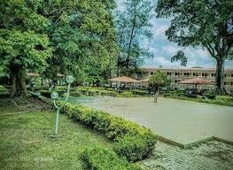
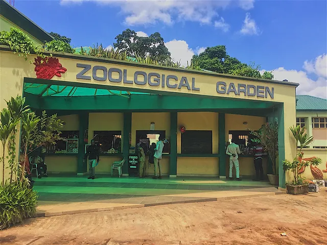
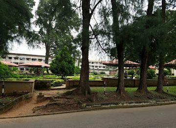
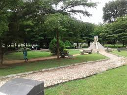
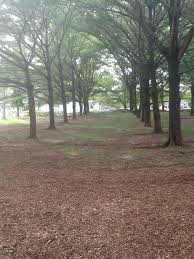
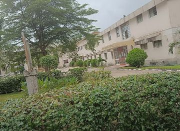
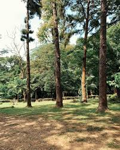
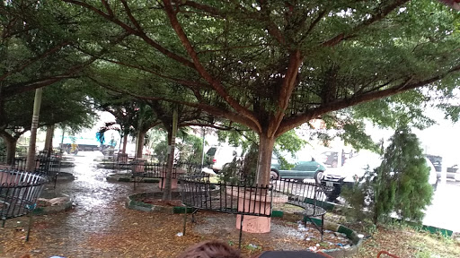

The University of Ibadan Botanical Garden is a serene, 100-acre green space for research, conservation, education, and recreation.
Location: Found within the University of Ibadan campus, bounded by Abadina Road and the Ajibode River.
.

The UI Zoo is a popular tourist attraction that began in 1948 as a menagerie for the Department of Zoology.

Another park located within the university campus.

A park on the campus of the University of Ibadan.

Another garden in the vicinity of UI.

Situated at the Faculty of Arts, University of Ibadan.

A garden also listed near the Botanical Garden.

A park on campus near the Botanical Garden.